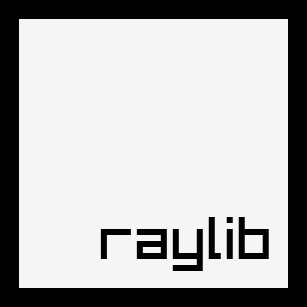

Simple on purpose
A readable C API with examples that make it easy to get started.
A small raylib obsession.
raylib is a C library for games and graphics. I like how quickly I can get a stupid little idea on screen. Five binding projects later, I clearly haven't got it out of my system.

raylib, created by raysan5A window, a loop, and an idea.
Why I use it
Windowing, input, drawing, audio, and math are all there. I can write the loop myself, try an idea, and see the result without much setup.
A readable C API with examples that make it easy to get started.
I control the loop, the state, and how the game responds to input.
Open source, available on several platforms, and supported by an active community.
My language bindings
I started with rayscal, then tried Oberon, Modula, F*, and Mojo. Each project explores how to use raylib from a different language while keeping the native API accessible.
Full surface areaWindowing, input, drawing, textures, 3D, audio, shaders, collisions and low-level rlgl.
Native ownershipManaged handles, scoped with... helpers, fast failure on use-after-unload.
Built to prove itselfABI checks, FFI safety assertions, native examples, and a complete arcade game.
All five repositories
Each repository includes its bindings and examples, covering ownership, generated declarations, header APIs, and native pointers.
SCALA NATIVE
Scala-owned values, managed resource handles, scoped lifetimes, and C shims where struct-by-value FFI gets sharp.
OBERON-2 + COMPONENT PASCAL
Generated Ofront+ bindings for raylib, rlgl, and raymath, with record-layout checks and a real game in each language.
GNU MODULA-2 + MODULA-3
The full public API for GM2 and CM3, plus rlgl, raymath, raygui, audio, and the small bridge library header APIs need.
F* + KARAMEL
Value structs stay values. Unsafe pointers stay visibly unsafe. rlgl and raymath are regenerated from the installed headers.
MOJO
raylib, rlgl, rcamera, raymath, audio, shaders, VR, models, input, filesystem calls, and a complete dodge game.
Contributing
Working on these bindings has taught me a lot about raylib. I’d like to contribute upstream too, whether that means examples, documentation, tooling, or bug fixes.
Try it in the browser
Bring the little ship down on the yellow pad. Keep it upright, watch your speed, and try not to use all the fuel.
turn left / right
thrust up / w / space
goal land gently on yellow
It uses the browser runtime from konsumer/raylib-wasm. I wrote the game and drew everything with basic raylib shapes.
Thanks to everyone who makes raylib possible.
Back to top